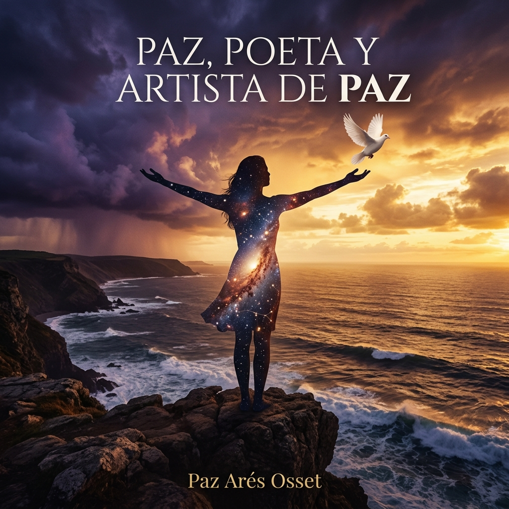
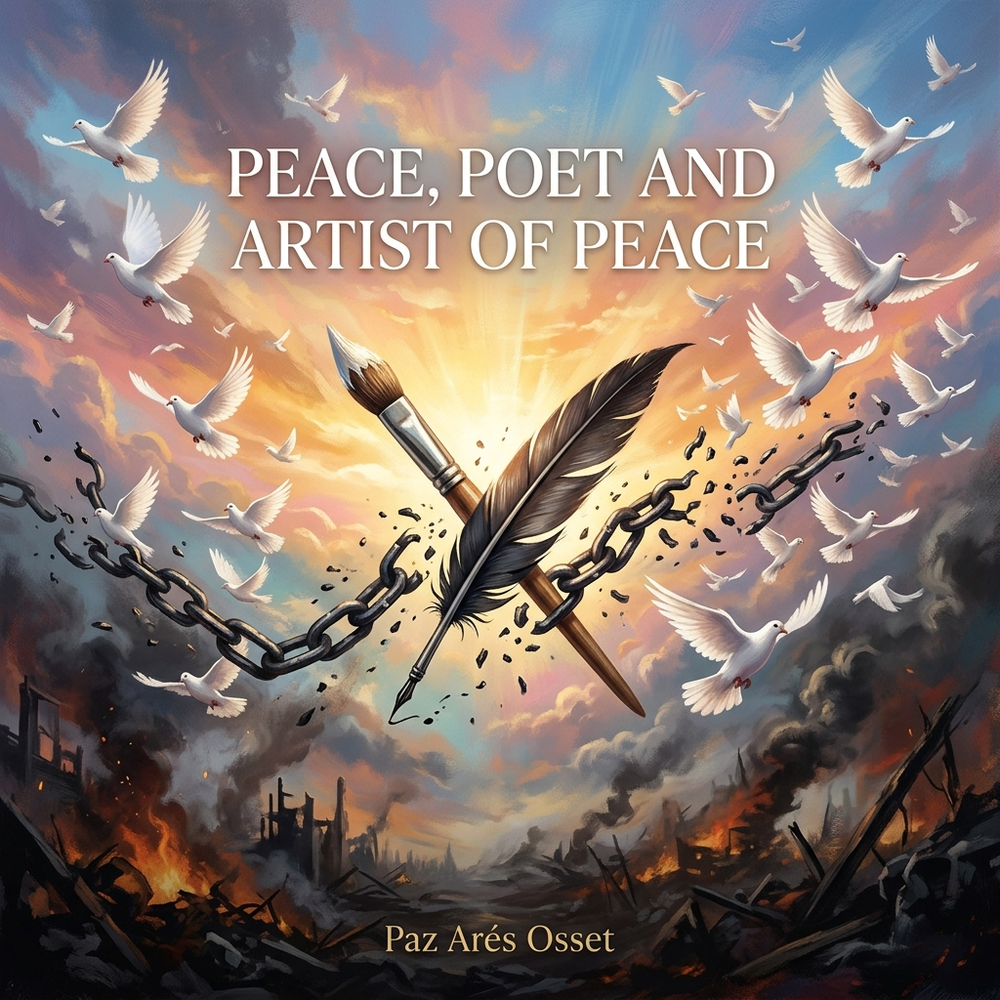
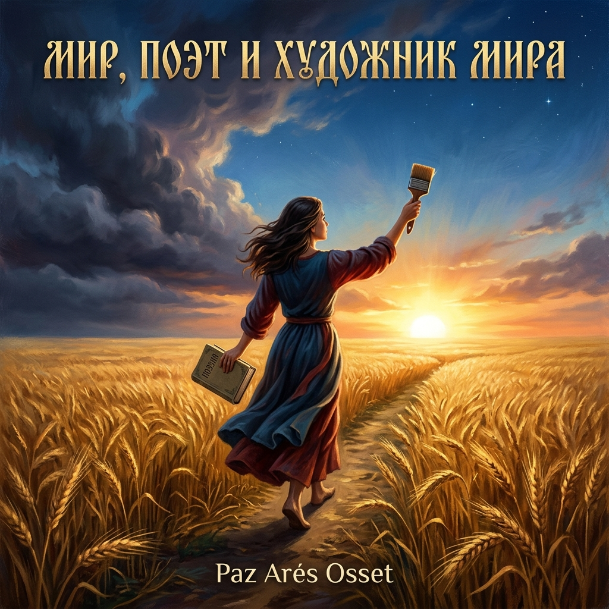

Paz, Poeta y Artista de Paz
Paz, Poet and Artist of Peace
Мир, Поэт и Художник Мира
Мир, Поет і Художник Миру
Paz, Poeta e Artista di Pace
和平，和平的诗人和艺术家
باز، شاعرة وفنانة من أجل السلام
Paz, Dichterin und Künstlerin des Friedens
Paz, Poète et Artiste de Paix
パス、平和の詩人と芸術家
Paz, Poeta e Artista da Paz
Desde las cicatrices de la guerra, mis versos buscan paz y esperanza.
From the scars of war, my verses seek peace and hope.
Из шрамов войны мои стихи ищут мир и надежду.
З шрамів війни мої вірші шукають мир і надію.
Dalle cicatrici della guerra, i miei versi cercano pace e speranza.
从战争的伤痕中，我的诗句寻求和平与希望。
من ندوب الحرب، تبحث أبياتي عن السلام والأمل.
Aus den Narben des Krieges suchen meine Verse Frieden und Hoffnung.
Des cicatrices de la guerre, mes vers cherchent paix et espoir.
戦争の傷跡から、私の詩は平和と希望を求める。
Das cicatrizes da guerra, os meus versos buscam paz e esperança.
Paz, Poeta y Artista de Paz
Nací en Sidi Ifni, una provincia de España que avanza.
donde la guerra de 1957, me dejó su huella,
una sombra en la esperanza.
A la tierna edad de casi tres años,
entre el caos y la desolación,
se grabaron recuerdos,
en el fondo de mi corazón.
donde la guerra de 1957, me dejó su huella,
una sombra en la esperanza.
A la tierna edad de casi tres años,
entre el caos y la desolación,
se grabaron recuerdos,
en el fondo de mi corazón.
Los ecos de aquellos días,
aún resuenan en mi ser,
sombras de una infancia,
que apenas pude ver.
En cada risa forzada,
en cada lágrima oculta,
se esconde el dolor
de una inocencia culta.
aún resuenan en mi ser,
sombras de una infancia,
que apenas pude ver.
En cada risa forzada,
en cada lágrima oculta,
se esconde el dolor
de una inocencia culta.
Artista y poeta, con el alma marcada,
caminando por la vida,
con una carga pesada.
En mi búsqueda de alegría,
en este mundo injusto,
las cicatrices internas,
dificultan sentirse agusto.
caminando por la vida,
con una carga pesada.
En mi búsqueda de alegría,
en este mundo injusto,
las cicatrices internas,
dificultan sentirse agusto.
Aunque sonrío y escribo,
bajo un cielo gris a veces,
en mi ser profundo,
se guarda lo que viví a veces.
La humanidad a veces desespera,
a veces se desvanece,
y sigue adelante,
gracias a el alma divina que nos mece.
bajo un cielo gris a veces,
en mi ser profundo,
se guarda lo que viví a veces.
La humanidad a veces desespera,
a veces se desvanece,
y sigue adelante,
gracias a el alma divina que nos mece.
A pesar del dolor que en mi alma se anida,
en cada verso fluye vida,
una fuerza no vencida.
Como un río que persiste,
a pesar de las piedras en su cauce,
mi espíritu de poeta y artista,
en la adversidad reluce.
en cada verso fluye vida,
una fuerza no vencida.
Como un río que persiste,
a pesar de las piedras en su cauce,
mi espíritu de poeta y artista,
en la adversidad reluce.
En el arte encuentro refugio,
en la poesía un hogar,
un lugar donde las heridas
pueden empezar a sanar.
Mis palabras son puentes,
entre el ayer y el mañana,
un intento de sanar,
de aliviar la guerra en paz.
en la poesía un hogar,
un lugar donde las heridas
pueden empezar a sanar.
Mis palabras son puentes,
entre el ayer y el mañana,
un intento de sanar,
de aliviar la guerra en paz.
Así, cada verso o pincelada
son una luz en la oscuridad,
intento encontrar balance,
entre el dolor y la claridad.
En mi viaje humano,
como poeta, como artista, como ser,
busco sembrar esperanza,
en un mundo que a veces parece perecer.
son una luz en la oscuridad,
intento encontrar balance,
entre el dolor y la claridad.
En mi viaje humano,
como poeta, como artista, como ser,
busco sembrar esperanza,
en un mundo que a veces parece perecer.
En los momentos más sombríos,
donde la esperanza parece lejana,
surge una luz tenue,
en el alma aún temprana.
Es en la noche más oscura,
donde las estrellas brillan con fuerza,
recordándome que incluso el dolor,
su lección refuerza.
donde la esperanza parece lejana,
surge una luz tenue,
en el alma aún temprana.
Es en la noche más oscura,
donde las estrellas brillan con fuerza,
recordándome que incluso el dolor,
su lección refuerza.
En cada suspiro de desaliento,
en cada instante de desesperación,
encuentro un hilo de fuerza,
una chispa de inspiración.
Como poeta, anhelo mis versos
se conviertan en un faro,
un refugio en la tormenta,
calor en el desamparo.
en cada instante de desesperación,
encuentro un hilo de fuerza,
una chispa de inspiración.
Como poeta, anhelo mis versos
se conviertan en un faro,
un refugio en la tormenta,
calor en el desamparo.
En estos momentos de guerras,
deseo que mi voz tenga poder,
no solo para expresar dolor,
sino también para renacer.
Porque incluso en la tristeza
más profunda y desgarradora,
se esconde la posibilidad de la paz
y una nueva aurora.
deseo que mi voz tenga poder,
no solo para expresar dolor,
sino también para renacer.
Porque incluso en la tristeza
más profunda y desgarradora,
se esconde la posibilidad de la paz
y una nueva aurora.
Paz, Poet and Artist of Peace
I was born in Sidi Ifni,
a province of Spain that advances,
where the war of 1957 left its mark on me,
a shadow in hope.
At the tender age of almost three years,
amidst chaos and desolation,
memories were etched
in the depths of my heart.
a province of Spain that advances,
where the war of 1957 left its mark on me,
a shadow in hope.
At the tender age of almost three years,
amidst chaos and desolation,
memories were etched
in the depths of my heart.
The echoes of those days
still resonate within me,
shadows of a childhood
I could barely see.
In every forced laugh,
in every hidden tear,
lies the pain
of a cultured innocence.
still resonate within me,
shadows of a childhood
I could barely see.
In every forced laugh,
in every hidden tear,
lies the pain
of a cultured innocence.
Artist and poet, with a marked soul,
walking through life,
carrying a heavy load.
In my quest for joy,
in this unjust world,
internal scars
make it hard to feel at ease.
walking through life,
carrying a heavy load.
In my quest for joy,
in this unjust world,
internal scars
make it hard to feel at ease.
Though I smile and write,
under a gray sky sometimes,
deep within my being,
what I lived is sometimes kept.
Humanity sometimes despairs,
sometimes fades away,
and moves forward,
thanks to the divine soul that cradles us.
under a gray sky sometimes,
deep within my being,
what I lived is sometimes kept.
Humanity sometimes despairs,
sometimes fades away,
and moves forward,
thanks to the divine soul that cradles us.
Despite the pain that nests in my soul,
life flows in each verse,
an undefeated force.
Like a river that persists,
despite the stones in its course,
my spirit as a poet and artist
shines in adversity.
life flows in each verse,
an undefeated force.
Like a river that persists,
despite the stones in its course,
my spirit as a poet and artist
shines in adversity.
In art, I find refuge,
in poetry, a home,
a place where wounds
can begin to heal.
My words are bridges,
between yesterday and tomorrow,
an attempt to heal,
to ease the war in peace.
in poetry, a home,
a place where wounds
can begin to heal.
My words are bridges,
between yesterday and tomorrow,
an attempt to heal,
to ease the war in peace.
Thus, each verse or brushstroke
is a light in the darkness,
I try to find balance
between pain and clarity.
In my human journey,
as a poet, as an artist, as a being,
I seek to sow hope,
in a world that sometimes seems to perish.
is a light in the darkness,
I try to find balance
between pain and clarity.
In my human journey,
as a poet, as an artist, as a being,
I seek to sow hope,
in a world that sometimes seems to perish.
In the darkest moments,
where hope seems distant,
a faint light arises,
in the still young soul.
It is in the darkest night,
where the stars shine brightly,
reminding me that even pain
reinforces its lesson.
where hope seems distant,
a faint light arises,
in the still young soul.
It is in the darkest night,
where the stars shine brightly,
reminding me that even pain
reinforces its lesson.
In every sigh of discouragement,
in every moment of despair,
I find a thread of strength,
a spark of inspiration.
As a poet, I long for my verses
to become a beacon,
a refuge in the storm,
warmth in the desolation.
in every moment of despair,
I find a thread of strength,
a spark of inspiration.
As a poet, I long for my verses
to become a beacon,
a refuge in the storm,
warmth in the desolation.
In these times of wars,
I wish my voice to have power,
not only to express pain
but also to be reborn.
Because even in the deepest
and most heartbreaking sorrow,
there lies the possibility of peace
and a new dawn.
I wish my voice to have power,
not only to express pain
but also to be reborn.
Because even in the deepest
and most heartbreaking sorrow,
there lies the possibility of peace
and a new dawn.
Мир, Поэт и Художник Мира
Я родилась в Сиди-Ифни,
провинции Испании, что движется вперёд,
где война 1957 года оставила свой след —
тень в надежде.
В нежном возрасте почти трёх лет,
средь хаоса и запустения,
воспоминания врезались
в глубины моего сердца.
провинции Испании, что движется вперёд,
где война 1957 года оставила свой след —
тень в надежде.
В нежном возрасте почти трёх лет,
средь хаоса и запустения,
воспоминания врезались
в глубины моего сердца.
Эхо тех дней
до сих пор звучит во мне,
тени детства,
которое я едва могла увидеть.
В каждом вынужденном смехе,
в каждой скрытой слезе
притаилась боль
изысканной невинности.
до сих пор звучит во мне,
тени детства,
которое я едва могла увидеть.
В каждом вынужденном смехе,
в каждой скрытой слезе
притаилась боль
изысканной невинности.
Художник и поэт, с отмеченной душой,
шагая по жизни
с тяжёлой ношей.
В моих поисках радости
в этом несправедливом мире
внутренние шрамы
мешают чувствовать себя свободно.
шагая по жизни
с тяжёлой ношей.
В моих поисках радости
в этом несправедливом мире
внутренние шрамы
мешают чувствовать себя свободно.
Хоть я улыбаюсь и пишу
под порой серым небом,
в глубине моего существа
порой хранится пережитое.
Человечество порой отчаивается,
порой угасает,
и движется вперёд
благодаря божественной душе, что нас качает.
под порой серым небом,
в глубине моего существа
порой хранится пережитое.
Человечество порой отчаивается,
порой угасает,
и движется вперёд
благодаря божественной душе, что нас качает.
Несмотря на боль, что гнездится в моей душе,
в каждом стихе течёт жизнь,
непобедимая сила.
Как река, что не сдаётся,
несмотря на камни в её русле,
мой дух поэта и художника
сияет в невзгодах.
в каждом стихе течёт жизнь,
непобедимая сила.
Как река, что не сдаётся,
несмотря на камни в её русле,
мой дух поэта и художника
сияет в невзгодах.
В искусстве я нахожу убежище,
в поэзии — дом,
место, где раны
могут начать исцеляться.
Мои слова — это мосты
между вчера и завтра,
попытка исцелить,
облегчить войну миром.
в поэзии — дом,
место, где раны
могут начать исцеляться.
Мои слова — это мосты
между вчера и завтра,
попытка исцелить,
облегчить войну миром.
Так, каждый стих или мазок кисти —
свет во тьме,
я пытаюсь найти равновесие
между болью и ясностью.
В моём человеческом путешествии
как поэт, как художник, как существо,
я стремлюсь сеять надежду
в мире, что порой кажется гибнущим.
свет во тьме,
я пытаюсь найти равновесие
между болью и ясностью.
В моём человеческом путешествии
как поэт, как художник, как существо,
я стремлюсь сеять надежду
в мире, что порой кажется гибнущим.
В самые тёмные мгновения,
когда надежда кажется далёкой,
рождается слабый свет
в ещё юной душе.
Именно в самую тёмную ночь
звёзды сияют ярче всего,
напоминая мне, что даже боль
укрепляет свой урок.
когда надежда кажется далёкой,
рождается слабый свет
в ещё юной душе.
Именно в самую тёмную ночь
звёзды сияют ярче всего,
напоминая мне, что даже боль
укрепляет свой урок.
В каждом вздохе уныния,
в каждом мгновении отчаяния
я нахожу нить силы,
искру вдохновения.
Как поэт, я мечтаю, чтобы мои стихи
стали маяком,
убежищем в буре,
теплом в одиночестве.
в каждом мгновении отчаяния
я нахожу нить силы,
искру вдохновения.
Как поэт, я мечтаю, чтобы мои стихи
стали маяком,
убежищем в буре,
теплом в одиночестве.
В эти времена войн
я желаю, чтобы мой голос имел силу —
не только выражать боль,
но и возрождаться.
Ведь даже в самой глубокой
и раздирающей печали
скрывается возможность мира
и новой зари.
я желаю, чтобы мой голос имел силу —
не только выражать боль,
но и возрождаться.
Ведь даже в самой глубокой
и раздирающей печали
скрывается возможность мира
и новой зари.
Мир, Поет і Художник Миру
Я народилася в Сіді-Іфні,
провінції Іспанії, що рухається вперед,
де війна 1957 року залишила свій слід —
тінь у надії.
У ніжному віці майже трьох років,
серед хаосу та спустошення,
спогади вкарбувалися
в глибини мого серця.
провінції Іспанії, що рухається вперед,
де війна 1957 року залишила свій слід —
тінь у надії.
У ніжному віці майже трьох років,
серед хаосу та спустошення,
спогади вкарбувалися
в глибини мого серця.
Відлуння тих днів
досі звучить у мені,
тіні дитинства,
яке я ледь бачила.
У кожному вимушеному сміху,
у кожній прихованій сльозі
ховається біль
витонченої невинності.
досі звучить у мені,
тіні дитинства,
яке я ледь бачила.
У кожному вимушеному сміху,
у кожній прихованій сльозі
ховається біль
витонченої невинності.
Художник і поет, з позначеною душею,
крокуючи по життю
з важким тягарем.
У моїх пошуках радості
в цьому несправедливому світі
внутрішні шрами
заважають почуватися вільно.
крокуючи по життю
з важким тягарем.
У моїх пошуках радості
в цьому несправедливому світі
внутрішні шрами
заважають почуватися вільно.
Хоча я посміхаюся і пишу
під часом сірим небом,
у глибині мого єства
часом зберігається пережите.
Людство часом відчаюється,
часом згасає,
і рухається вперед
завдяки божественній душі, що нас колише.
під часом сірим небом,
у глибині мого єства
часом зберігається пережите.
Людство часом відчаюється,
часом згасає,
і рухається вперед
завдяки божественній душі, що нас колише.
Попри біль, що гніздиться в моїй душі,
в кожному вірші тече життя,
непереможна сила.
Як річка, що не здається,
попри каміння у своєму руслі,
мій дух поета і художника
сяє в негодах.
в кожному вірші тече життя,
непереможна сила.
Як річка, що не здається,
попри каміння у своєму руслі,
мій дух поета і художника
сяє в негодах.
У мистецтві я знаходжу притулок,
у поезії — дім,
місце, де рани
можуть почати зцілюватися.
Мої слова — це мости
між учора і завтра,
спроба зцілити,
полегшити війну миром.
у поезії — дім,
місце, де рани
можуть почати зцілюватися.
Мої слова — це мости
між учора і завтра,
спроба зцілити,
полегшити війну миром.
Так, кожен вірш чи мазок пензля —
світло у темряві,
я намагаюся знайти рівновагу
між болем і ясністю.
У моїй людській подорожі
як поет, як художник, як істота,
я прагну сіяти надію
у світі, що часом здається гинучим.
світло у темряві,
я намагаюся знайти рівновагу
між болем і ясністю.
У моїй людській подорожі
як поет, як художник, як істота,
я прагну сіяти надію
у світі, що часом здається гинучим.
У найтемніші миті,
коли надія здається далекою,
народжується слабке світло
в ще юній душі.
Саме в найтемнішу ніч
зорі сяють найяскравіше,
нагадуючи мені, що навіть біль
зміцнює свій урок.
коли надія здається далекою,
народжується слабке світло
в ще юній душі.
Саме в найтемнішу ніч
зорі сяють найяскравіше,
нагадуючи мені, що навіть біль
зміцнює свій урок.
У кожному зітханні зневіри,
в кожній миті відчаю
я знаходжу нитку сили,
іскру натхнення.
Як поет, я мрію, щоб мої вірші
стали маяком,
притулком у бурі,
теплом у самотності.
в кожній миті відчаю
я знаходжу нитку сили,
іскру натхнення.
Як поет, я мрію, щоб мої вірші
стали маяком,
притулком у бурі,
теплом у самотності.
У ці часи воєн
я бажаю, щоб мій голос мав силу —
не тільки виражати біль,
а й відроджуватися.
Бо навіть у найглибшому
і найболючішому горі
ховається можливість миру
і нової зорі.
я бажаю, щоб мій голос мав силу —
не тільки виражати біль,
а й відроджуватися.
Бо навіть у найглибшому
і найболючішому горі
ховається можливість миру
і нової зорі.
Paz, Poeta e Artista di Pace
Sono nata a Sidi Ifni,
una provincia della Spagna che avanza,
dove la guerra del 1957
ha lasciato il suo segno su di me,
un'ombra nella speranza.
Alla tenera età di quasi tre anni,
tra il caos e la desolazione,
i ricordi si sono incisi
nel profondo del mio cuore.
una provincia della Spagna che avanza,
dove la guerra del 1957
ha lasciato il suo segno su di me,
un'ombra nella speranza.
Alla tenera età di quasi tre anni,
tra il caos e la desolazione,
i ricordi si sono incisi
nel profondo del mio cuore.
Artista e poeta, con l'anima segnata,
camminando per la vita,
con un carico pesante.
Alla ricerca della gioia,
in questo mondo ingiusto,
le cicatrici interne
rendono difficile sentirsi a proprio agio.
camminando per la vita,
con un carico pesante.
Alla ricerca della gioia,
in questo mondo ingiusto,
le cicatrici interne
rendono difficile sentirsi a proprio agio.
Nonostante il dolore
che si annida nella mia anima,
in ogni verso scorre la vita,
una forza invincibile.
Come un fiume che persiste,
nonostante le pietre nel suo corso,
il mio spirito di poeta e artista
risplende nell'avversità.
che si annida nella mia anima,
in ogni verso scorre la vita,
una forza invincibile.
Come un fiume che persiste,
nonostante le pietre nel suo corso,
il mio spirito di poeta e artista
risplende nell'avversità.
Nell'arte trovo rifugio,
nella poesia una casa,
un luogo dove le ferite
possono iniziare a guarire.
Le mie parole sono ponti,
tra ieri e domani,
un tentativo di guarire,
di alleviare la guerra con la pace.
nella poesia una casa,
un luogo dove le ferite
possono iniziare a guarire.
Le mie parole sono ponti,
tra ieri e domani,
un tentativo di guarire,
di alleviare la guerra con la pace.
In questi momenti di guerre,
desidero che la mia voce abbia potere,
non solo per esprimere dolore,
ma anche per rinascere.
Perché anche nel dolore
più profondo e straziante,
si nasconde la possibilità di pace
e una nuova aurora.
desidero che la mia voce abbia potere,
non solo per esprimere dolore,
ma anche per rinascere.
Perché anche nel dolore
più profondo e straziante,
si nasconde la possibilità di pace
e una nuova aurora.
和平，和平的诗人和艺术家
我出生在西迪伊夫尼，
这是西班牙的一个省份。
1957年的战争在我身上留下了印记，
希望中的阴影。
在将近三岁的幼年时期，
在混乱和荒凉中，
记忆深深地刻在我的心中。
这是西班牙的一个省份。
1957年的战争在我身上留下了印记，
希望中的阴影。
在将近三岁的幼年时期，
在混乱和荒凉中，
记忆深深地刻在我的心中。
艺术家和诗人，灵魂带着印记，
在人生中行走，肩负沉重的负担。
在这个不公正的世界里寻找快乐，
内心的伤痕使人难以感到自在。
在人生中行走，肩负沉重的负担。
在这个不公正的世界里寻找快乐，
内心的伤痕使人难以感到自在。
尽管我的灵魂中藏着痛苦，
每一行诗中都流淌着生命，
一种不屈的力量。
像一条坚持不懈的河流，
尽管河道中有石头，
我的诗人和艺术家的精神
在逆境中闪耀。
每一行诗中都流淌着生命，
一种不屈的力量。
像一条坚持不懈的河流，
尽管河道中有石头，
我的诗人和艺术家的精神
在逆境中闪耀。
在艺术中我找到了避难所，
在诗歌中找到了家，
一个伤口可以开始愈合的地方。
我的话语是桥梁，
连接着昨日与明天，
试图治愈，缓解战争中的和平。
在诗歌中找到了家，
一个伤口可以开始愈合的地方。
我的话语是桥梁，
连接着昨日与明天，
试图治愈，缓解战争中的和平。
在这些战争的时刻，
我希望我的声音有力量，
不仅表达痛苦，而且重生。
因为即使在最深的、
最撕心裂肺的悲伤中，
也隐藏着和平和新黎明的可能性。
我希望我的声音有力量，
不仅表达痛苦，而且重生。
因为即使在最深的、
最撕心裂肺的悲伤中，
也隐藏着和平和新黎明的可能性。
باز، شاعرة وفنانة من أجل السلام
ولدت في سيدي إفني،
محافظة من إسبانيا التي تتقدم،
حيث تركت حرب 1957 بصمتها علي،
ظل في الأمل.
في سن الرقيقة ما يقرب من ثلاث سنوات،
بين الفوضى والخراب،
تم حفر الذكريات في عمق قلبي.
محافظة من إسبانيا التي تتقدم،
حيث تركت حرب 1957 بصمتها علي،
ظل في الأمل.
في سن الرقيقة ما يقرب من ثلاث سنوات،
بين الفوضى والخراب،
تم حفر الذكريات في عمق قلبي.
فنان وشاعر، بروح موسومة،
أمشي في الحياة، أحمل حملاً ثقيلاً.
في سعيي للفرح، في هذا العالم غير العادل،
الجروح الداخلية تجعل من الصعب الشعور بالراحة.
أمشي في الحياة، أحمل حملاً ثقيلاً.
في سعيي للفرح، في هذا العالم غير العادل،
الجروح الداخلية تجعل من الصعب الشعور بالراحة.
على الرغم من الألم الذي يعشش في روحي،
في كل آية تتدفق الحياة، قوة لا تقهر.
مثل نهر يستمر،
على الرغم من الحجارة في مساره،
تلمع روحي كشاعر وفنان في الشدائد.
في كل آية تتدفق الحياة، قوة لا تقهر.
مثل نهر يستمر،
على الرغم من الحجارة في مساره،
تلمع روحي كشاعر وفنان في الشدائد.
في الفن أجد ملجأ، في الشعر أجد منزلاً،
مكان حيث يمكن للجروح أن تبدأ في الشفاء.
كلماتي جسور، بين الأمس والغد،
محاولة للشفاء، لتخفيف الحرب بالسلام.
مكان حيث يمكن للجروح أن تبدأ في الشفاء.
كلماتي جسور، بين الأمس والغد،
محاولة للشفاء، لتخفيف الحرب بالسلام.
في هذه الأوقات من الحروب،
أتمنى أن يكون لصوتي قوة،
ليس فقط للتعبير عن الألم،
بل للنهضة أيضاً.
لأنه حتى في أعمق
وأشد الأحزان تمزقاً،
يكمن احتمال السلام وفجر جديد.
أتمنى أن يكون لصوتي قوة،
ليس فقط للتعبير عن الألم،
بل للنهضة أيضاً.
لأنه حتى في أعمق
وأشد الأحزان تمزقاً،
يكمن احتمال السلام وفجر جديد.
Paz, Dichterin und Künstlerin des Friedens
Ich wurde in Sidi Ifni geboren,
einer Provinz Spaniens, die voranschreitet,
wo der Krieg von 1957 seine Spuren hinterließ —
ein Schatten in der Hoffnung.
Im zarten Alter von fast drei Jahren,
inmitten von Chaos und Verwüstung,
prägten sich Erinnerungen
in die Tiefen meines Herzens.
einer Provinz Spaniens, die voranschreitet,
wo der Krieg von 1957 seine Spuren hinterließ —
ein Schatten in der Hoffnung.
Im zarten Alter von fast drei Jahren,
inmitten von Chaos und Verwüstung,
prägten sich Erinnerungen
in die Tiefen meines Herzens.
Künstlerin und Dichterin, mit gezeichneter Seele,
wandelnd durch das Leben
mit einer schweren Last.
Auf der Suche nach Freude
in dieser ungerechten Welt
erschweren innere Narben
das Gefühl der Geborgenheit.
wandelnd durch das Leben
mit einer schweren Last.
Auf der Suche nach Freude
in dieser ungerechten Welt
erschweren innere Narben
das Gefühl der Geborgenheit.
Trotz des Schmerzes,
der in meiner Seele nistet,
fließt in jedem Vers das Leben,
eine unbesiegte Kraft.
Wie ein Fluss, der beharrt,
trotz der Steine in seinem Lauf,
leuchtet mein Geist als Dichterin und Künstlerin
im Angesicht der Widrigkeiten.
der in meiner Seele nistet,
fließt in jedem Vers das Leben,
eine unbesiegte Kraft.
Wie ein Fluss, der beharrt,
trotz der Steine in seinem Lauf,
leuchtet mein Geist als Dichterin und Künstlerin
im Angesicht der Widrigkeiten.
In der Kunst finde ich Zuflucht,
in der Poesie ein Zuhause,
einen Ort, wo Wunden
beginnen können zu heilen.
Meine Worte sind Brücken
zwischen Gestern und Morgen,
ein Versuch zu heilen,
den Krieg im Frieden zu lindern.
in der Poesie ein Zuhause,
einen Ort, wo Wunden
beginnen können zu heilen.
Meine Worte sind Brücken
zwischen Gestern und Morgen,
ein Versuch zu heilen,
den Krieg im Frieden zu lindern.
In diesen Zeiten der Kriege
wünsche ich mir, dass meine Stimme Macht hat —
nicht nur um Schmerz auszudrücken,
sondern auch um wiedergeboren zu werden.
Denn selbst im tiefsten
und herzzerreißendsten Leid
verbirgt sich die Möglichkeit des Friedens
und einer neuen Morgendämmerung.
wünsche ich mir, dass meine Stimme Macht hat —
nicht nur um Schmerz auszudrücken,
sondern auch um wiedergeboren zu werden.
Denn selbst im tiefsten
und herzzerreißendsten Leid
verbirgt sich die Möglichkeit des Friedens
und einer neuen Morgendämmerung.
Paz, Poète et Artiste de Paix
Je suis née à Sidi Ifni,
une province d'Espagne qui avance,
où la guerre de 1957 a laissé sa marque —
une ombre dans l'espoir.
Au tendre âge de presque trois ans,
dans le chaos et la désolation,
les souvenirs se sont gravés
au fond de mon cœur.
une province d'Espagne qui avance,
où la guerre de 1957 a laissé sa marque —
une ombre dans l'espoir.
Au tendre âge de presque trois ans,
dans le chaos et la désolation,
les souvenirs se sont gravés
au fond de mon cœur.
Artiste et poète, l'âme marquée,
marchant dans la vie
avec un fardeau pesant.
Dans ma quête de joie
dans ce monde injuste,
les cicatrices intérieures
rendent difficile de se sentir à l'aise.
marchant dans la vie
avec un fardeau pesant.
Dans ma quête de joie
dans ce monde injuste,
les cicatrices intérieures
rendent difficile de se sentir à l'aise.
Malgré la douleur
qui niche dans mon âme,
dans chaque vers coule la vie,
une force invaincue.
Comme un fleuve qui persiste
malgré les pierres dans son cours,
mon esprit de poète et d'artiste
brille dans l'adversité.
qui niche dans mon âme,
dans chaque vers coule la vie,
une force invaincue.
Comme un fleuve qui persiste
malgré les pierres dans son cours,
mon esprit de poète et d'artiste
brille dans l'adversité.
Dans l'art je trouve refuge,
dans la poésie un foyer,
un lieu où les blessures
peuvent commencer à guérir.
Mes mots sont des ponts
entre hier et demain,
une tentative de guérir,
d'apaiser la guerre en paix.
dans la poésie un foyer,
un lieu où les blessures
peuvent commencer à guérir.
Mes mots sont des ponts
entre hier et demain,
une tentative de guérir,
d'apaiser la guerre en paix.
En ces temps de guerres,
je souhaite que ma voix ait du pouvoir —
non seulement pour exprimer la douleur,
mais aussi pour renaître.
Car même dans la tristesse
la plus profonde et déchirante,
se cache la possibilité de la paix
et d'une nouvelle aurore.
je souhaite que ma voix ait du pouvoir —
non seulement pour exprimer la douleur,
mais aussi pour renaître.
Car même dans la tristesse
la plus profonde et déchirante,
se cache la possibilité de la paix
et d'une nouvelle aurore.
パス、平和の詩人と芸術家
私はシディ・イフニで生まれた、
前進するスペインの一県で、
1957年の戦争が私に痕跡を残した —
希望の中の影。
ほぼ3歳の幼い頃、
混沌と荒廃の中で、
記憶は心の奥深くに刻まれた。
前進するスペインの一県で、
1957年の戦争が私に痕跡を残した —
希望の中の影。
ほぼ3歳の幼い頃、
混沌と荒廃の中で、
記憶は心の奥深くに刻まれた。
芸術家であり詩人、刻まれた魂を持ち、
重い荷物を背負いながら人生を歩む。
この不正な世界で喜びを求めるも、
内なる傷跡が安らぎを難しくする。
重い荷物を背負いながら人生を歩む。
この不正な世界で喜びを求めるも、
内なる傷跡が安らぎを難しくする。
魂に宿る痛みにもかかわらず、
すべての詩の中に命が流れる、
不屈の力。
その流れの中の石にもかかわらず
耐え続ける川のように、
私の詩人と芸術家の精神は
逆境の中で輝く。
すべての詩の中に命が流れる、
不屈の力。
その流れの中の石にもかかわらず
耐え続ける川のように、
私の詩人と芸術家の精神は
逆境の中で輝く。
芸術の中に避難所を見つけ、
詩の中に故郷を見つける、
傷が癒え始める場所。
私の言葉は橋、
昨日と明日をつなぐ、
癒す試み、戦争を平和で和らげる。
詩の中に故郷を見つける、
傷が癒え始める場所。
私の言葉は橋、
昨日と明日をつなぐ、
癒す試み、戦争を平和で和らげる。
戦争のこの時代に、
私の声に力があることを願う —
痛みを表現するだけでなく、
再び生まれ変わるために。
最も深く
心を引き裂く悲しみの中にさえ、
平和の可能性と
新しい夜明けが隠されている。
私の声に力があることを願う —
痛みを表現するだけでなく、
再び生まれ変わるために。
最も深く
心を引き裂く悲しみの中にさえ、
平和の可能性と
新しい夜明けが隠されている。
Paz, Poeta e Artista da Paz
Nasci em Sidi Ifni,
uma província de Espanha que avança,
onde a guerra de 1957 deixou a sua marca —
uma sombra na esperança.
Na tenra idade de quase três anos,
entre o caos e a desolação,
as memórias gravaram-se
nas profundezas do meu coração.
uma província de Espanha que avança,
onde a guerra de 1957 deixou a sua marca —
uma sombra na esperança.
Na tenra idade de quase três anos,
entre o caos e a desolação,
as memórias gravaram-se
nas profundezas do meu coração.
Artista e poeta, com a alma marcada,
caminhando pela vida
com uma carga pesada.
Na minha busca pela alegria
neste mundo injusto,
as cicatrizes internas
dificultam sentir-se à vontade.
caminhando pela vida
com uma carga pesada.
Na minha busca pela alegria
neste mundo injusto,
as cicatrizes internas
dificultam sentir-se à vontade.
Apesar da dor que aninha na minha alma,
em cada verso flui a vida,
uma força invencível.
Como um rio que persiste
apesar das pedras no seu leito,
o meu espírito de poeta e artista
brilha na adversidade.
em cada verso flui a vida,
uma força invencível.
Como um rio que persiste
apesar das pedras no seu leito,
o meu espírito de poeta e artista
brilha na adversidade.
Na arte encontro refúgio,
na poesia um lar,
um lugar onde as feridas
podem começar a sarar.
As minhas palavras são pontes
entre o ontem e o amanhã,
uma tentativa de curar,
de aliviar a guerra em paz.
na poesia um lar,
um lugar onde as feridas
podem começar a sarar.
As minhas palavras são pontes
entre o ontem e o amanhã,
uma tentativa de curar,
de aliviar a guerra em paz.
Nestes tempos de guerras,
desejo que a minha voz tenha poder —
não apenas para expressar dor,
mas também para renascer.
Porque mesmo na tristeza
mais profunda e dilacerante,
esconde-se a possibilidade da paz
e de uma nova aurora.
desejo que a minha voz tenha poder —
não apenas para expressar dor,
mas também para renascer.
Porque mesmo na tristeza
mais profunda e dilacerante,
esconde-se a possibilidade da paz
e de uma nova aurora.
Música — Paz, Poeta y Artista de Paz Music — Paz, Poet and Artist of Peace Музыка — Мир, Поэт и Художник Мира Музика — Мир, Поет і Художник Миру Musica — Paz, Poeta e Artista di Pace 音乐 — 和平，和平的诗人和艺术家 موسيقى — باز، شاعرة وفنانة السلام Musik — Paz, Dichterin und Künstlerin des Friedens Musique — Paz, Poète et Artiste de Paix 音楽 — パス、平和の詩人と芸術家 Música — Paz, Poeta e Artista da Paz

Disco en Castellano
Spanish Album
Испанский диск
Іспанський диск
Disco in Spagnolo
西班牙语专辑
ألبوم بالإسبانية
Spanisches Album
Album en Espagnol
スペイン語アルバム
Álbum em Espanhol
Paz Arés Osset
Spotify

Disco en Inglés
English Album
Английский диск
Англійський диск
Disco in Inglese
英语专辑
ألبوم بالإنجليزية
Englisches Album
Album en Anglais
英語アルバム
Álbum em Inglês
Paz Arés Osset
Spotify

Disco en Ruso
Russian Album
Русский диск
Російський диск
Disco in Russo
俄语专辑
ألبوم بالروسية
Russisches Album
Album en Russe
ロシア語アルバム
Álbum em Russo
Paz Arés Osset
Spotify